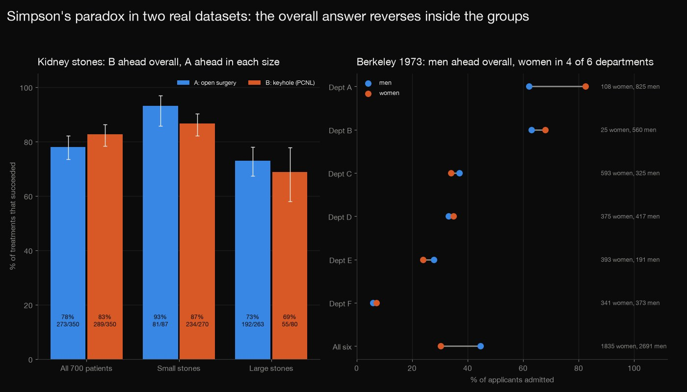
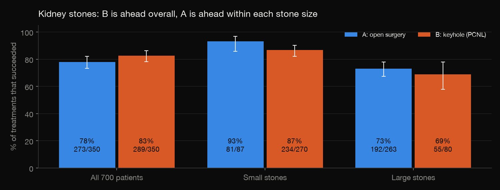
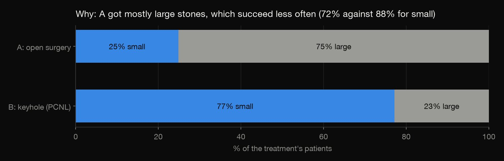
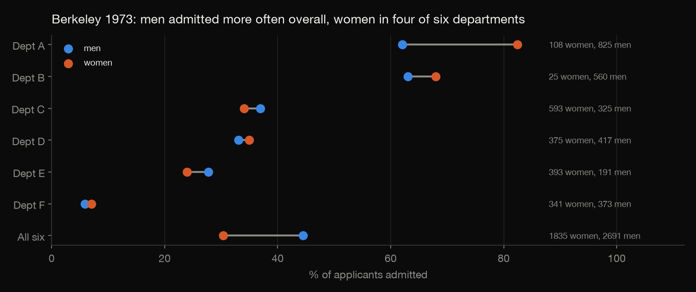
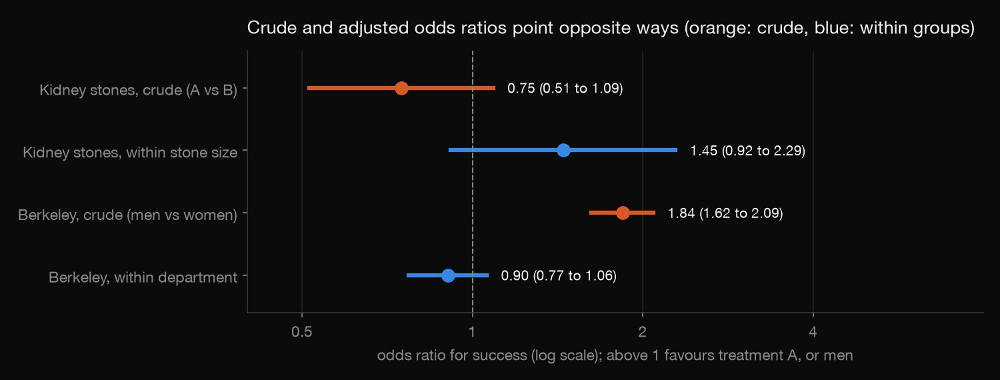

R · Statistical inference · 2026-10
Which Kidney-Stone Treatment Works Better? (R)
Keyhole surgery beats open surgery across 700 kidney-stone patients, yet open surgery wins within each stone size. The same analysis on Berkeley's 1973 admissions, where a gap against women turns around inside departments, shows what a reversal can and cannot prove.

Neither table is a randomised trial, so other differences between patients can remain, and the kidney comparison was not designed to settle which treatment is better. With 700 patients the adjusted kidney difference is not statistically clear (p = 0.12). The kidney counts are read from Wikipedia's quote of the published table, because the BMJ and PubMed Central pages sit behind a bot check.
01 — The problem
Treatment B, keyhole surgery, cleared the stone in 83% of 350 patients. Treatment A, open surgery, did so in 78% of 350. So B is better. But split the patients by stone size and A wins for small stones and for large stones. How can that be, and which answer do you believe?
This is Simpson's paradox. The question follows DataCamp's "Assessing the Effectiveness of Medical Treatments" project, and the counts are the published ones (Charig et al., BMJ 1986). To check the lesson isn't a one-off, the same analysis runs on a second real table: graduate admissions at Berkeley in 1973.
02 — What I built
One analysis function in R, run on both tables:
- Rates: overall and inside each group, with intervals and exact tests.
- The mix: where each side's cases sit, and how hard each group is.
- Adjusting: odds ratios (Mantel-Haenszel and logistic), an interaction test, and rates standardised to one mix.
- Check:
check.pyrecomputes all 192 numbers in Python from textbook formulas, sharing no code with R.
03 — How it was built
- 01
Get the two tables
The kidney-stone counts are six numbers from the published table. The BMJ and PubMed Central pages sit behind a bot check, so the script reads the table from Wikipedia's Simpson's paradox article, which quotes it, and asserts every count. The Berkeley table (4,526 applicants to the six largest departments) ships with R.
for (i in seq_len(nrow(kidney))) stopifnot(grepl(sprintf("%d/%d", kidney$success[i], kidney$n[i]), wikitext, fixed = TRUE)) stopifnot(grepl("273/350", wikitext, fixed = TRUE), grepl("289/350", wikitext, fixed = TRUE)) - 02
Compare the rates
The success rate of each treatment overall, then within small and within large stones, each with a 95% Wilson interval, plus Fisher's exact test for each stone size.
- 03
Look at who got which cases
Why do the answers disagree? Because the groups aren't alike. 75% of A's patients had large stones, against 23% of B's, and large stones succeed less often (72%, against 88% for small ones, both treatments pooled). Treatment A took on the hard cases, which drags its overall rate down.
- 04
Adjust for the group
Two standard ways: the Mantel-Haenszel estimate of one odds ratio shared by all groups, and a logistic regression with treatment and stone size. A likelihood-ratio test asks whether the treatment's effect differs between groups.
mh <- mantelhaen.test(arr, correct = FALSE) add <- glm(cbind(success, fail) ~ arm + stratum, family = binomial, data = g) - 05
Standardise to one mix
To compare fairly, give both treatments the same stone mix (the pooled one) and recompute each success rate. A bootstrap of 10,000 resamples of the cells puts an interval on the difference.
std1 <- sum(w * s1 / n1); std2 <- sum(w * s2 / n2) - 06
Run it again on Berkeley
The same function, with sex as the arm and department as the group. If the pattern is real it should show up the same way in a table with 4,526 applicants.
- 07
Recompute it in Python
check.pyrebuilds everything from the two raw tables with textbook formulas and no code from R: Wilson intervals, the chi-square test, Fisher's exact test by summing hypergeometric probabilities, the Mantel-Haenszel estimate with its Robins-Breslow-Greenland variance, logistic regression by Newton-Raphson on grouped counts, the interaction test from the saturated model, and the bootstrap with another random generator. All 192 numbers agree (the bootstrap bounds within sampling noise).Rk, Sk, Pk, Qk = A_ * D_ / nn, B_ * C_ / nn, (A_ + D_) / nn, (B_ + C_) / nn
04 — Results

Treatment B looks better overall; A is better inside each stone size. Overall B succeeded 82.6% of the time and A 78.0% (crude odds ratio for A against B: 0.75, 95% interval 0.51 to 1.09). For small stones A succeeded 93.1% against 86.7%, and for large stones 73.0% against 68.8%.

The groups aren't alike. 75% of A's patients had large stones, against 23% of B's. Large stones succeed less often, so A's overall rate was pulled down by the cases it was given.
Adjusted for stone size, the lean is toward A, but it isn't clear. The Mantel-Haenszel odds ratio is 1.45 (0.92 to 2.29; p = 0.12). Giving both treatments the same stone mix, A succeeds 83.3% and B 77.9%: +5.4 points, with a bootstrap interval of −1.1 to +12.0. The gaps inside each size (+6.4 and +4.3 points) are each within chance (Fisher p = 0.13 and 0.48). The direction reverses; the evidence for a winner is thin.

Berkeley: the same shape, with more data. Men were admitted 44.5% of the time and women 30.4% (crude odds ratio for men against women: 1.84, 1.62 to 2.09). Inside departments, women's rate was higher in four of six (department A: 82% against 62%), and the Mantel-Haenszel odds ratio is 0.90 (0.77 to 1.06; p = 0.22). Standardised to all applicants' department mix, women's rate is 43.0% and men's 38.7%. The reason is where people applied: 93% of women went to the four departments with below-average admission rates, against 49% of men.

| Odds ratio | Estimate | 95% CI |
|---|---|---|
| Kidney, crude | 0.75 | 0.51–1.09 |
| Kidney, adjusted | 1.45 | 0.92–2.29 |
| Berkeley, crude | 1.84 | 1.62–2.09 |
| Berkeley, adjusted | 0.90 | 0.77–1.06 |
Kidney odds ratios compare treatment A with B (above 1 favours A); Berkeley's compare men with women. "Adjusted" means within stone size or within department (Mantel-Haenszel).
Which answer should you believe? The statistics can't say; the story can. Stone size is fixed before the treatment is chosen, so comparing within sizes is right. If the grouping were something the treatment itself changes, adjusting for it would hide the effect. Berkeley's within-department view says decisions inside departments did not favour men; it does not say why women's applications were concentrated where they were.
05 — What I'd do next
- Look for randomised comparisons of the two kidney-stone treatments, to see whether the lean toward A holds when assignment is not up to the surgeon.
- Draw the causal diagram for each example and check which adjustments it supports.
- Fit a mixed model for Berkeley that gives each department its own admission rate, instead of one odds ratio for all six.